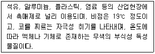
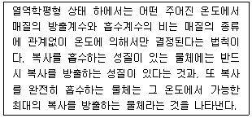
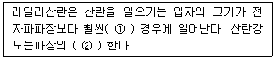
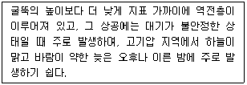
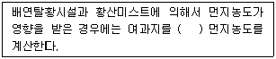
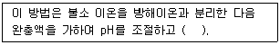
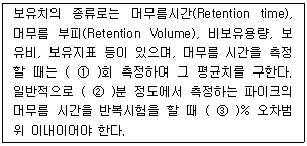
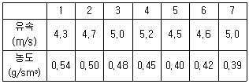
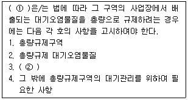
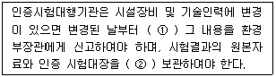

대기환경산업기사 (2012-09-15 기출문제)
1과목: 대기오염개론
1. 다음 설명하는 오염물질로 가장 적합한 것은?

- Copper
- Cytochrome
- Ozone
- Hydrogen fluoride
(정답률: 88%)

2. 대기의 특성과 관련된 설명으로 옳지 않은 것은?
- 공기는 물에 비해 탄성이 약하며, 약 0~50℃ 의 온도범위 내에서 공기는 보통 이상기체의 법칙을 따른다.
- 공기의 절대습도란 이론적으로 함유된 수증기 또는 물의 함량을 말하며 단위는 % 이다.
- 행성경계층(PBL)보다 높은 고도에서 기압경도력과 전향력의 평형에 의하여 이루어지는 바람을 지균풍이라고 한다.
- 대기안정도와 난류는 대기경계층내에서 오염물질의 확산정도를 결정하는 중요한 인자이다.
(정답률: 89%)
3. 어떤 혼합기체의 부피조성이 질소가스 80% 와 이산화탄소 가스 20%로 이루어졌다. 이 혼합기체의 평균분자량은?
- 31.2
- 38.9
- 44.0
- 49.3
(정답률: 83%)
4. 다음 설명하는 복사법칙으로 가장 적합한 것은?

- 플랑크의 법칙
- 빈의 법칙
- 스테판-볼쯔만의 법칙
- 키르히호프의 법칙
(정답률: 82%)
5. 역전현상에 관한 설명으로 거리가 먼 것은?
- 기온역전은 접지역전과 공중역전으로 나눌 수 있다.
- 침강성 역전과 전선형 역전은 공중역전에 속한다.
- 복사역전은 주로 밤부터 이른 아침 사이에 일어난다.
- 굴뚝의 높이 상하에서 각각 침강역전과 복사역전이 동시에 발생하는 경우 플룸(plume)의 형태는 훈증형(fumigation)으로 된다.
(정답률: 86%)
6. 바람에 관한 설명으로 옳지 않은 것은?
- 해륙풍 중 육풍은 육지에서 바다로 향해 5~6km까지 바람이 불며 겨울철에 빈발한다.
- 산곡풍 중 산풍은 밤에 경사면이 빨리 냉각되어 경사면 위의 공기 온도가 같은 고도의 경사면에서 떨어져 있는 공기의 온도보다 차가워져 경사면 위의 공기 전체가 아래로 침강하게 되어 부는 바람이다.
- 전원풍은 열섬효과 때문에 도시의 중심부에서 하강 기류가 발생하여 부는 바람이다.
- 휀풍은 산맥의 정상을 기준으로 풍상쪽 경사면을 따라 공기가 상승하면서 건조단열 변화를 하기 때문에 평지에서보다 기온이 약 1℃/100m의 율로 하강하게 된다.
(정답률: 83%)
7. 다음은 레일리산란에 관한 설명이다. ( )안에 알맞은 것은?

- ① 큰, ② 4승에 비례
- ① 큰, ② 4승에 반비례
- ① 작은, ② 4승에 비례
- ① 작은, ② 4승에 반비례
(정답률: 65%)
8. 분자량이 M인 대기오염 물질의 농도가 표준상태(0℃, 1기압)에서 448ppm으로 측정되었다. 표준상태에서 몇 mg/m3 인가?
- 1/20M
- M/20
- 20M
- 20/M
(정답률: 89%)
9. 분산모델 및 수용모델의 특성에 관한 설명으로 옳지 않은 것은?
- 수용모델을 통하여 미래의 대기질을 쉽게 예측할 수 있다.
- 수용모델을 통하여 새로운 오염원, 불확실한 오염원과 불법배출 오염원을 정량적으로 확인 평가할 수있다.
- 분산모델은 오염물의 단기간 분석시 문제가 된다.
- 분산모델은 지형 및 오염원의 조업조건에 영향을 받는다.
(정답률: 75%)
10. 대기오염물질의 특성에 관한 설명으로 가장 거리가 먼 것은?
- 염화비닐(vinyl chloride)에 만성폭로 되면 레이노증후군, 말단 골연화증, 간 ㆍ 비장의 섬유화가 일어난다.
- 삼염화에틸렌(trichloroethylene)은 중추신경계를 억제하며 간과 신장에 미치는 독성은 사염화탄소에 비해 낮은 편이다.
- 아크릴아마이드(acryl amide)는 주로 피부를 통해 흡수되며 다발성 신경염을 일으킨다.
- 이황화탄소는 하기도를 통해서 흡수되기도 하지만 대부분 피부를 통해서 체내 흡수되며 폐부종을 일으킨다.
(정답률: 82%)
11. 실내공기 오염물질에 관한 설명으로 옳은 것은?
- 이산화질소는 일산화질소보다 독성이 대략 10 정도 강하고, 물에 잘 녹아서 인체 폐포까지 쉽게 침투할 수 있다.
- 일산화탄소는 무색, 무미의 기체로 인체 혈액 중 헤모글로빈과 쉽게 결합하고, 산소보다 약 10~15배 정도의 결합력을 가지고 있다.
- 라돈은 화학적으로 반응이 활발하며, 흙 속에서 방사선 붕괴에 관여한다.
- 석면이나 광물섬유들은 장력강도와 열 및 전기적인 절연성이 크고, 화학적으로 분해가 잘 되지 않는다.
(정답률: 62%)
12. 다음 대기상태에 해당되는 연기의 형태는?

- Looping
- Lofting
- Fanning
- Coning
(정답률: 85%)
13. 공업지역의 먼지 농도 측정을 위해 여과지를 이용하여 0.45m/s 속도로 3시간 여과시킨 결과, 깨끗한 여과지에 비해 사용한 여과지의 빛전달율이 66% 였다면 1000m 당 Coh는?
- 3.0
- 3.2
- 3.7
- 3.9
(정답률: 80%)
14. Aerodynamic diameter 의 정의로 가장 적합한 것은?
- 본래의 먼지보다 침강속도가 작은 구형입자의 직경
- 본래의 먼지와 침강속도가 동일하며, 밀도 1g/cm2인 구형입자의 직경
- 본래의 먼지와 밀도 및 침감속도가 동일한 구형입자의 직경
- 본래의 먼지보다 침강속도가 큰 구형입자의 직경
(정답률: 90%)
15. 다음 중 2차 대기오염물질과 가장 거리가 먼 것은?
- H2O2
- NaCl
- SO2
- SO3
(정답률: 86%)
16. 굴뚝에서 배출되는 연기 형태 중 환상형(looping)에 관한 설명으로 옳지 않은 것은?
- 과단열감률 상태의 대기일 때 발생하는 형태이다.
- 상 ㆍ 하층 공기의 혼합이 왕성하여 오염물질을 잘 확산시킨다.
- 굴뚝 가까운 곳의 지표농도가 높게 될 수 있다.
- 바람이 다소 강하고, 구름이 많이 낀 날에 주로 관찰된다.
(정답률: 84%)
17. 벨기에의 뮤즈계곡사건, 미국의 도노라사건 및 런던 대기오염사건의 공통적인 주요 대기오염 원인물질로 가장 적합한 것은?
- SO2
- O3
- CS2
- NO2
(정답률: 84%)
18. 대표적인 증상으로 인체 혈액 헤모글로빈의 기본 요소인 포르피린 고리의 형성을 방해함으로써 헤모글로빈의 형성을 억제하므로, 중독에 걸렸을 경우 만성 빈혈이 발생할 수 있는 대기오염물질에 해당하는 것은?
- 납
- 아연
- 안티몬
- 비소
(정답률: 83%)
19. 다음 특정물질 중 펜타클로로플루오르에탄(CFC-111)의 화학식으로 옳은 것은?
- C3H2FCl5
- C3HF2Cl5
- C3F3Cl5
- C2FCl5
(정답률: 75%)
20. 지구 지표면의 열수지를 표현하기 위해 복사수지식을 적용하는데 다음 중 대기과학에서 사용하는 용어로서 지표의 반사율을 나타내는 지표는? (단, 입사에너지에 대하여 반사되는 에너지의 비)
- 유효율
- 알베도
- 복사도
- 일사도
(정답률: 87%)
2과목: 대기오염 공정시험 기준(방법)
21. 굴뚝 배출가스 중의 유량, 유속 측정방법에 사용되는 피토우관에 관한 설명으로 옳지 않은 것은?
- 스텐레스와 같은 재질의 금속관이 사용된다.
- 피토우관의 각 분기관 사이의 거리는 같아야 한다.
- 관의 바깥지름의 범위는 50~100mm 정도이어야 한다.
- 각 분기관과 오리피스 평면과의 거리는 바깥지름의 1.⑤~1.50 배 사이에 있어야 한다.
(정답률: 74%)
22. 다음은 굴뚝 배출가스 내의 먼지측정방법 중 반자동식 채취기에 의한 사항이다. ( )안에 가장 적합한 것은?

- 110±5℃에서 2시간 이상 건조시킨 후
- 160℃ 이상에서 2시간 이상 건조시킨 후
- 110±5℃에서 4시간 이상 건조시킨 후
- 160℃ 이상에서 4시간 이상 건조시킨 후
(정답률: 82%)
23. 굴뚝 배출가스 내의 황산화물 측정방법 중 중화적정법에 관한 설명으로 옳지 않은 것은?
- 이산화탄소의 방해가 현저하다.
- 시료를 과산화수소에 흡수시켜 황산화물을 황산으로 만든다.
- 수산화나트륨 용액으로 적정한다.
- 시료 20L를 흡수액에 통과시키고, 이 액을 250mL로 묽게하여 분석용 시료용액으로 할 때 황산화물 전체 농도가 250ppm 이상이고 다른 산성가스 영향을 무시할 때 적용한다.
(정답률: 67%)
24. 다음은 굴뚝 배출가스 중의 불소화합물을 용량법으로 분석하는 방법이다. ( )안에 알맞은 것은?

- 네오트린을 가한 다음 질산나트륨 용액으로 적정한다.
- 네오트린을 가한 다음 황산나트륨 용액으로 적정한다.
- 란탄과 알리자린 콤플렉손을 가한 다음 질산나트륨으로 적정한다.
- 란탄과 알리자린 콤플렉손을 가한 다음 황산나트륨으로 적정한다.
(정답률: 69%)
25. 굴뚝 배출가수 중 먼지 채취시 배출구(굴뚝)의 직경이 2.2m의 원형 단면일 때, 필요한 측정점의 반경구 분수와 측정점수는?
- 반경구분수 1, 측정점수 4
- 반경구분수 2, 측정점수 8
- 반경구분수 3, 측정점수 12
- 반경구분수 4, 측정점수 16
(정답률: 84%)
26. 굴뚝 배출가스 중의 황화수소를 메틸렌 블루무법으로 측정하고자 할 때, 시료의 채취량 및 흡인속도로 가장 적합한 것은? (단, 황화수소 농도는 5~100ppm 이다.)
- 50~100L, 10~15L/min
- 20~50L, 5~10L/min
- 10~20L, 1~5L/min
- 1~10L, 0.1~0.5L/min
(정답률: 65%)
27. 다음은 이온크로마토그래피에 사용되는 보유치에 관한 설명이다. ( )안에 가장 적합한 것은?

- ① 10, ② 30~60, ③ ±10
- ① 10, ② 30~60, ③ ±3
- ① 3, ② 5~30, ③ ±10
- ① 3, ② 5~30, ③ ±3
(정답률: 68%)
28. 흡광광도법에서 램버어트 비어(Lambert-Beer)의 법칙에 따른 흡광도 식의 표현으로 옳은 것은? (단, Io : 입사광의 강도, It : 투사광의 강도, t = It / Io이다.)
- 10t
- t×100
- log1/t
- log t
(정답률: 89%)
29. 대기오염공정시험기준상 다음 분석가스별 시험방법에 대한 종말점의 색깔로 옳지 않은 것은?
- 암모니아 - 중화적정법 - 적자색
- 염화수소 - 질산은적정법 - 엷은적색
- 황산화물 - 아르세나조Ⅲ법 - 청색
- 황화수소 - 용량법 - 적색
(정답률: 62%)
30. 굴뚝 배출가스 중 시안화수소를 질산은 적정법으로 분석하는 방법에 관한 설명으로 옳지 않은 것은?
- 시료 채취량 50L인 경우 시료 중의 시안화수소의 정량 범위는 5~100ppm이다.
- 염화물이 공존하는 경우에는 탄산납을 가하여 염화납으로서 침전시켜 거르고 황화물이 공존하는 경우에는 암모니아수(28%) 1mL를 가하고 그후 각각 pH를 조절한다.
- N/100 질산은 용액으로 적정하여 용액의 색이 황색에서 적색이 되는 점을 종말점으로 한다.
- 적정은 5mL의 갈색 마이크로 뷰렛을 사용하여 행한다.
(정답률: 61%)
31. 굴뚝 배출가스 내의 일산화탄소 분석방법 중 정전 위 전해법 장치성능기준에 관한 설명으로 옳지 않은 것은?
- 측정범위는 최고 5%로 한다.
- 재현성은 측정범위 최대 눈금값의 ±2% 이내로 한다.
- 전압 변동에 대한 안정성은 최대 눈금값의 ±1%이내로 한다.
- 시료가스 유량 변화에 따른 안정성은 최대 눈금값의 ±2% 이내로 한다.
(정답률: 67%)
32. 다음 중 분석대상가스가 불소화합물인 경우 사용 여과재의 재질로 가장 적합한 것은?
- 알칼리 성분이 없는 유리솜
- 알칼리 성분이 없는 실리카솜
- 소결유리
- 카아보란덤
(정답률: 73%)
33. 굴뚝 배출가스 중 베릴륨 분석방법으로 옳은 것은?
- 용액전도율법
- 아세틸아세톤법
- 몰린형광광도법
- 디에틸아민법
(정답률: 74%)
34. 환경대기 중의 먼지측정방법 중 장치구성은 유량계, 공기 흡인부, 광전자증배관, 광전류적 분기, 타이머, 광원부 등으로 구성되어 있으며, 습도, 비, 안개 등의 영향으로 상대 습도가 70% 이상이면 측정치의 신뢰도가 낮아지는 측정방법은?
- 광투과법
- 광산란법
- 하이볼륨에어샘플러법
- 로우볼륨에어샘플러법
(정답률: 65%)
35. 시험의 기재 및 용어에 대한 정의로 옳지 않은 것은?
- 용액의 액성표시는 따로 규정이 없는 한 유리전극법에 의한 pH미터로 측정한 것을 뜻한다.
- 액체성분의 양을 정확히 취한다 함은 홀피펫, 메스 플라스크 또는 이와 동등이상의 정도를 갖는 용량계를 사용하여 조작하는 것을 뜻한다.
- 항량이 될 때까지 건조한다 함은 따로 규정이 없는 한 보통의 건조방법으로 1시간 더 건조할 때 전후무게의 차가 0.5mg이하일 때를 뜻한다.
- 바탕시험을 하여 보정한다 함은 시료에 대한 처리 및 측정을 할 때 시료를 사용하지 않고 같은 방법으로 조작한 측정치를 빼는 것을 뜻한다.
(정답률: 81%)
36. NaOH 20g을 물에 용해시켜 800mL로 하였다. 이 용액은 몇 N 인가?
- 0.0625 N
- 0.625 N
- 6.25 N
- 62.5 N
(정답률: 82%)
37. 연료용 유류중의 황함유량을 측정하기 위한 분석방법 중 연소관식 공기법에 관한 설명으로 옳지 않은 것은?
- 연소되어 산을 발생시키는 원소(P, N, Cl 등)가 들어있는 시료에는 사용할 수 없다.
- 생성된 황산화물을 과산화수소(3%)에 흡수시켜 황산으로 만든 다음, 수산화나트륨표준액으로 중화적정한다.
- 950~1100℃로 가열한 석영재질 연소관 중에 공기를 불어넣어 시료를 연소시킨다.
- 불용성 황산염을 만드는 금속(Ba, Ca 등) 등의 분석에 유효하다.
(정답률: 66%)
38. 비분산 적외선 분석법(Nondispersive Infrared Analysis)에 관한 설명으로 가장 거리가 먼 것은?
- 비분산 검출기(Nondispersive Detector)를 이용하여 적외선의 분산 변화량을 측정하여 시료 중 목적 성분을 구하는 방법이다.
- 회전섹타의 단속방식에는 1~20Hz의 교호단속 방식과 동시단속 방식이 있다.
- 광학필터에는 가스필터와 고체필터가 있다.
- 광원은 원칙적으로 니크롬선 또는 탄화규소의 저항체에 전류를 흘려 가열한 것을 사용한다.
(정답률: 57%)
39. 굴뚝 배출가스 중 크롬화합물의 자외선/가시선 분광 분석법에 관한 설명으로 옳지 않은 것은?
- 시료 용액 중의 크롬을 과망간산칼륨에 의하여 6가로 산화하고, 요소를 가한다.
- 아질산나트륨으로 과량의 과망간산염을 분해한 후 다이페닐카바지드를 가하여 발색시킨다.
- 파장 460nm를 부근에서 흡광도를 측정한다.
- 철 외에 방해물질이 많은 경우에는 클로로폼으로 추출 후 크롬을 정량할 수 있다.
(정답률: 79%)
40. 단면모양이 정사각형인 어떤 굴뚝을 동일한 면적으로 n개의 등분할 면적으로 각각 구분하여 각 측정점 마다 유속과 먼지의 농도를 측정하였더니 다음과 같은 값을 얻었다. 이 전체 먼지의 평균농도는?

- 0.48 g/Sm3
- 0.45 g/Sm3
- 0.42 g/Sm3
- 0.40 g/Sm3
(정답률: 63%)
3과목: 대기오염방지기술
41. 세정식집진장치의 특성으로 가장 거리가 먼 것은?
- 조해성, 점착성의 먼지 제거가 가능하다.
- 소수성 입자의 집진효과가 크다.
- 한번 제거된 입자는 보통 처리가스 속으로 재비산되지 않는다.
- 고온가스 및 연소, 폭발성 가스의 처리가 가능하다.
(정답률: 70%)
42. 250Sm3/h의 배출가스를 배출하는 보일러에서 발생하는 SO2를 탄산칼슘으로 이론적으로 완전제거 하고자 한다. 이 때 필요한 탄산칼슘의 양(kg/h)은? (단, 배출가스 중의 SO2농도는 2500ppm 이고, 이론적으로 100% 반응하며, 표준상태 기준)
- 0.28
- 2.8
- 28
- 280
(정답률: 55%)
43. 3.2% S을 함유한 석탄 5ton을 이론적으로 완전연소 시킬 경우 표준상태에서의 SO2발생량은? (단, 석탄 중의 S는 모두 SO2형태로 발생된다.)
- 112Sm3
- 128Sm3
- 135Sm3
- 160Sm3
(정답률: 40%)
44. 굴뚝에서 배출되는 가스를 분석하였더니 용량비로 질소 86%, 산소 4%, 이산화탄소 10% 의 결과치를 얻었다면 이때 공기비는 약 얼마인가?
- 1.2
- 1.5
- 1.7
- 1.9
(정답률: 57%)
45. propane 1Sm3을 공기비 1.2로 완전연소 시킬 때 습배출가스 중 CO2 농도(%)는?
- 7.2
- 9.8
- 12.9
- 17.2
(정답률: 60%)
46. 다음 흡수장치 중 기체분산형에 해당하는 것은?
- spray tower
- plate tower
- venturi scrubber
- spray chamber
(정답률: 77%)
47. 다음 중 후드(hood)를 사용하여 가스를 포획하는 방법에 관한 설명으로 가장 거리가 먼 것은?
- 후드는 발생원에 접근할수록 유리하다.
- 개구면적을 좁게 하여 흡인속도를 크게 한다.
- 국부적인 흡인방식으로 한다.
- 통제속도는 후드가 취급할 공기양을 최대로 하고, 최소의 먼지부하을 얻도록 결정한다.
(정답률: 60%)
48. 먼지(dust)에 관한 설명으로 옳지 않은 것은?
- 입견 10μm 이하의 부유입자는 비교적 대기 중에 장시간 체류한다.
- 진밀도가 작을수록 침강속도가 느리다.
- 입경이 클수록 동종입자 간에 부착력이 작아진다.
- 입경이 작을수록 비표면적이 작다.
(정답률: 78%)
49. 다음 중 시판되고 있는 액화석유가스의 구성으로 가장 적합한 것은?
- methane 10%, propane 90% 의 혼합물
- methane 70%, propane 30% 의 혼합물
- propane 10%, butane 90% 의 혼합물
- propane 70%, butane 30% 의 혼합물
(정답률: 68%)
50. 전기집진장치에서 코로나 방전시 정(+)코로나 보다 부(-)코로나 방전을 이용하는 이유에 관한 설명으로 옳은 것은?
- 코로나 방전개시 전압이 낮기 때문에
- 불꽃 방전개시 전압이 낮기 때문에
- 보다 적은 양의 코로나 전류를 흘릴 수 있기 때문에
- 보다 적은 전계강도를 얻을 수 있기 때문에
(정답률: 61%)
51. A 연료가스가 부피로 H2 9%, CO 24%, CH4 2%, CO2 6%, O2 3%, N2 56% 의 구성비를 갖는다. 이 기체 연료를 1기압 하에서 20%의 과잉공기로 연소시킬 경우 연료 1Sm3당 요구되는 실제 공기량은?
- 0.83Sm3
- 1Sm3
- 1.68Sm3
- 1.98Sm3
(정답률: 59%)
52. 다음 중 SOx와 NOx를 동시에 제어하는 기술로 거리가 먼 것은?
- Filter cage 공정
- 활성탄 공정
- NOXSO 공정
- CuO 공정
(정답률: 70%)
53. 연료 연소중에 생성되는 NOx를 저감시키기 위한 대채긍로 가장 거리가 먼 것은?
- 연소 영역에서의 산소의 농도를 높게 한다.
- NOx 함량이 적은 연료를 사용한다.
- 연소온도를 낮게 한다.
- 연소 영역에서 연소 가스의 체류시간을 짧게 한다.
(정답률: 57%)
54. 형상비가 3.0 이고, 반경비가 2.0인 장방형 곡관의 속도압 백분율은 10% 이다. 속도압이 20mmH2O 라면이 관의 압력손실(mmH2O)은?
- 2
- 10
- 20
- 30
(정답률: 38%)
55. 여과집진장치를 이용한 먼지 또는 훈연 처리에서 다음 중 최대여과속도가 가장 큰 것은?
- 합성세제
- 밀가루
- 금속훈연
- 산화아연
(정답률: 66%)
56. 1.4m×2.0m×2.0m인 연소실에서 저위발열량이 10000kcal/kg인 중유를 150kg/h로 연소시키고 있다. 이 때 연소실의 열발생률(kcal/m3ㆍh)은?
- 2.7×105
- 3.6×105
- 5.6×105
- 7.2×105
(정답률: 53%)
57. 벤츄리 스크러버에 관한 설명으로 옳지 않은 것은?
- 슬로트부의 가스 유속은 60~90m/s 정도이다.
- 액가스비는 10~50L/m3정도로 다른 가압수식에 비해 크다.
- 압력손실은 300~800mmH2O 정도이다.
- 가스 입구에 벤츄리관을 삽입하고 세정액을 슬로트 부주변에 있는 분사노즐을 통하여 가스 중으로 분무하는 방식이다.
(정답률: 64%)
58. A연마시설에서 배출되는 먼지를 제거하기 위해 사이클론을 이용하고자 한다. 처리가스의 점도가 2.0×10-4 poise, 입구농도가 7g/m3 일 때 입자의 cut size diameter(μm)는? (단, 유효회전수 5, 사이클론의 입구폭 90cm, 입자의 밀도 2900kg/m3, 배출가스의 밀도 1.2kg/m3, 입구 가스속도 12.5m/s)
- 8
- 10
- 12
- 17
(정답률: 52%)
59. 옥탄(Octane)을 이론적으로 완전연소 시킬 때 부피 및 무게에 의한 공기연료비(AFR)로 옳은 것은?
- 부피 : 39.5, 무게 : 13.1
- 부피 : 49.5, 무게 : 14.1
- 부피 : 59.5, 무게 : 15.1
- 부피 : 69.5, 무게 : 16.1
(정답률: 54%)
60. 여과집진장치에 관한 설명으로 옳지 않은 것은?
- 진동형, 역기류형, 역기류 진동형은 간헐식 탈진방법에 해당한다.
- 진동형은 점성이 있는 조대먼지 탈진 시에는 여포손상을 일으킨다.
- 송풍기의 위치에 따른 분류로 가압식은 여과집진장치에 부(-)압이 작용하며, 송풍기 부식의 염려는 거의 없다.
- 연속식 탈진방법은 간헐식에 비해 집진율이 낮은 편이며, 탈진 시 먼지의 재비산이 일어난다.
(정답률: 68%)
4과목: 대기환경 관계 법규
61. 다음은 대기환경보전법규상 총량규제구역의 지정 사항이다. ( )안에 가장 적합한 것은?

- ① 대통령, ② 총량규제부하량
- ① 환경부장관, ② 총량규제부하량
- ① 대통령, ② 대기오염물질의 저감계획
- ① 환경부장관, ② 대기오염물질의 저감계획
(정답률: 62%)
62. 다음은 대기환경보전법규상 제작차에 대한 인증시 험대행기관의 운영 및 관리기준이다. ( )안에 알맞은 것은?

- ① 15일 이내에, ② 1년 동안
- ① 15일 이내에, ② 3년 동안
- ① 30일 이내에, ② 1년 동안
- ① 30일 이내에, ② 5년 동안
(정답률: 62%)
63. 대기환경보전법규상 특정대기유해물질이 아닌 것은?
- 황화메틸
- 베릴륨 및 그 화합물
- 에틸벤젠
- 벤지딘
(정답률: 40%)
64. 대기환경보전법규상 환경기술인의 보수교육은 신규교육을 받은 날을 기준으로 몇 년마다 1회를 받아야 하는가? (단, 정보통신매체를 이용하여 원격교육을 하는 경우 제외)
- 1년
- 2년
- 3년
- 5년
(정답률: 69%)
65. 대기환경보전법규상 수도권대기환경청장, 국립환경과학원장 또는 한국환경공단이 설치하는 대기오염 측 정망의 종류에 해당하지 않는 것은?
- 도시지역 또는 산업단지 인근지역의 특정대기유해물질(중금속을 제외한다)의 오염도를 측정하기 위한 유해대기물질측정망
- 신성 대기오염물질의 건성 및 습성 침착량을 측정하기 위한 산성감해물측정망
- 도로변의 대기오염물질 농도를 측정하기 위한 도로변대기측정망
- 황사 등 장거리이동 대기오염물질의 성분을 집중 측정하기 위한 대기오염집중측정망
(정답률: 64%)
66. 대기환경보전법상에서 사용하는 용어의 뜻으로 옳지 않은 것은?
- '매연'이란 연소할 때에 생기는 유리(遊離) 탄소가 주가 되는 미세한 입자상물질을 말한다.
- '휘발성유기화합물'이란 탄화산소류 중 석유화학제품 유기용제 그 밖의 물질로서 환경부령으로 정한다.
- '가스'란 물질이 연소 ㆍ 합성 ㆍ 분해될 때에 발생하거나 물리적 성질로 인하여 발생하는 기체상물질을 말한다.
- '먼지'란 대기 중에 떠다니거나 흩날려 내려오는 입자상물질을 말한다.
(정답률: 42%)
67. 대기환경보전법령상 황사대책위원회의 위원구분 중 “대통령령으로 정하는 중앙행정기관의 공무원”에 해당되는 것은?
- 지식경제부장관
- 보건복지부장관
- 환경부장관
- 기상처장
(정답률: 53%)
68. 대기환경보전법령상 초과부과금 산정 시 다음 오염물질 중 1킬로그램당 부과금액이 가장 큰 것은?
- 이황화탄소
- 황화수소
- 불소화합물
- 암모니아
(정답률: 58%)
69. 대기환경보전법규상 금속의 용융 ㆍ 제련 또는 열처리시설 중 대기오염물질 배출시설기준에 해당하지 않는 것은?
- 1회 주입연료 및 원료량의 합계가 0.5톤 이상인 제선로
- 1회 주입 원료량이 0.2톤 이상이거나 연료사용량이 시간당 25킬로그램 이상인 도가니로
- 풍구(노복)면의 횡단면적이 0.2제곱미터 이상인 제선로
- 노상면적이 4.5제곱미터 이상인 반사로
(정답률: 55%)
70. 대기환경보전법상 비산먼지의 발생을 억제하기 위한 시설을 설치하지 아니하거나 필요한 조치를 하지 아니한자에 대한 벌칙기준으로 옳은 것은? (단, 시멘트 ㆍ 석탄 ㆍ 토사 ㆍ 사료 ㆍ 곡물 및 고철의 분체상 물질을 운송한 자는 제외한다.)
- 5년 이하의 징역이나 3천만원 이하의 벌금에 처한다.
- 1년 이하의 징역이나 500만원 이하의 벌금에 처한다.
- 300만원 이하의 벌금에 처한다.
- 200만원 이하의 벌금에 처한다.
(정답률: 52%)
71. 대기환경보전법규상 대기오염 경보단계별 알림기준 중 주의보의 발령기준으로 옳은 것은?
- 기상조건 등을 검토하여 해당지역의 대기자동측정소 오존농도가 0.12ppm 이상일 때
- 기상조건 등을 검토하여 해당지역의 대기자동측정소 오존농도가 0.5ppm 이상일 때
- 기상조건 등을 검토하여 해당지역의 대기자동측정소 오존농도가 1.2ppm 이상일 때
- 기상조건 등을 검토하여 해당지역의 대기자동측정소 오존농도가 1.5ppm 이상일 때
(정답률: 62%)
72. 대기환경보전법규상 시ㆍ도지사가 대기환경 규제지역의 환경기준 달성을 위해 수립하는 실천계획 수립시 포함되어야 할 사항과 가장 거리가 먼 것은?
- 계획달성연도의 대기질 예측 결과
- 대기오염원별 대기오염물질 저감계획 및 계획의 시행을 위한 수단
- 규제지역 내 대기오염물질배출 감시시설 설치현황 및 연도별 감시시설 설치계획
- 대기보전을 위한 투자계획과 대기오염물질 저감효과를 고려한 경제성 평가
(정답률: 41%)
73. 대기환경보전법규상 자동차연료형 첨가제의 종류와 가장 거리가 먼 것은?
- 유동성향상제
- 다목적첨가제
- 청정첨가제
- 매연억제제
(정답률: 48%)
74. 대기환경보전법규상 위임업무 보고사항 중 “자동차연료 제조기준 적합여부 검사현황” 보고횟수기준으로 옳은 것은?
- 수시
- 연 1회
- 연 2회
- 연 4회
(정답률: 36%)
75. 대기환경보전법령상 휘발유 ㆍ 알코올 또는 가스를 사용하거나 이들 연료를 섞어 사용하는 자동차의 경우 운행차 배출허용기준적용 항목이 아닌 것은? (단, 무부하(無負河) 검사방법으로 하는 경우이다.)
- 일산화탄소
- 배기관 탄화수소
- 매연
- 질소산화물(공기과잉률이 측정에 의하여 추정되는 질소 산화물)
(정답률: 54%)
76. 대기환경보전법규상 배출가스 보증기간 적용기준에 관한 사항으로 옳지 않은 것은? (단, 2009년 1월 1일 이후 제작자동차)
- 배출가수 보증기간의 만료를 기간 또는 주행거리 중 먼저 도달하는 것을 기준으로 한다.
- 휘발유와 가스를 병용하는 자동차는 휘발유 사용 자동차의 보증기간을 적용한다.
- 보증기간은 자동차 소유자가 자동차를 구입한 일자를 기준으로 한다.
- 휘발유를 사용하는 이륜자동차의 경우 적용기간은 2년 또는 10,000km 이다,
(정답률: 56%)
77. 대기환경보전법상 대기환경규제지역을 관할하는 시ㆍ도지사가 그 지역의 환경기준을 달성ㆍ유지하기 위한 계획을 수립하고 시행하여야 하는 기간기준으로 옳은 것은?
- 그 지역이 대기환경규제지역으로 지정 ㆍ 고시된 후 3월 이내에
- 그 지역이 대기환경규제지역으로 지정 ㆍ 고시된 후 6월 이내에
- 그 지역이 대기환경규제지역으로 지정 ㆍ 고시된 후 1년 이내에
- 그 지역이 대기환경규제지역으로 지정 ㆍ 고시된 후 2년 이내에
(정답률: 42%)
78. 대기환경보전법령상 굴뚝 자동측정기기의 부착대상 배출시설, 측정 항목, 부착 면제, 부착 시기 및 부착 유예기준에 관한 사항으로 옳지 않은 것은?
- 부착대상시설의 용량은 배출시설 설치허가증 또는 설치신고증명서의 방지시설의 용량을 기준으로 배출구별로 산정하되, 같은 배출시설에 2개 이상의 배출구를 설치한 경우에는 배출구별로 방지시설의 용량을 합산하며, 이 경우 방지시설의 용량은 표준상태(0℃, 1기압)로 환산한 값을 적용한다.
- 같은 사업장에 부착대상 배출구가 2개 이상인 경우에는 환경오염공정시험기준에 따른 중간자료수집기(FEP)를 부착하여야 한다.
- 표준산소농도가 적용되는 시설에 대해서는 산소측정기를 부착하지 아니하여도 된다.
- 소각시설의 경우에는 배출구의 온도와 최종 연소실 출구의 온도를 각각 측정할 수 있도록 온도측정기를 부착하여야 한다. 다만, 최종 연소실 출구의 온도측정기는 「폐기물관리법」 에 따라 온도측정기를 부착한 경우에는 별도로 부착하지 아니하여도 된다.
(정답률: 60%)
79. 대기환경보전법규상 대기오염물질에 해당하지 않는 것은?
- 이산화탄소
- 일산화탄소
- 이황화탄소
- 사염화탄소
(정답률: 58%)
80. 대기환경보전법규상 자동차 정밀검사 업무와 관련한 과징금 산정기준에 관한 사항으로 옳지 않은 것은?
- 과징금은 1개월당 과징금액에 업무정지일수를 곱한 금액으로 하되, 1천만원을 초과할 수 없다.
- 월 평균검사대수(재검사대수를 제외한다)는 위반행위가 있은 날 이전 최근 3개월간의 평균검사대수로 한다.
- 사업기간이 3개월 미만인 경우에는 사업개시일로부터 위반행위를 한 날의 전날까지의 평균검사대수를 기준으로 하되, 월 근무일수는 23일로 계산한다.
- 월 평균검사대수가 1,800대를 초과하는 경우에는 초과하는 100대 마다 200만원을 추가하여 부과한다.
(정답률: 42%)